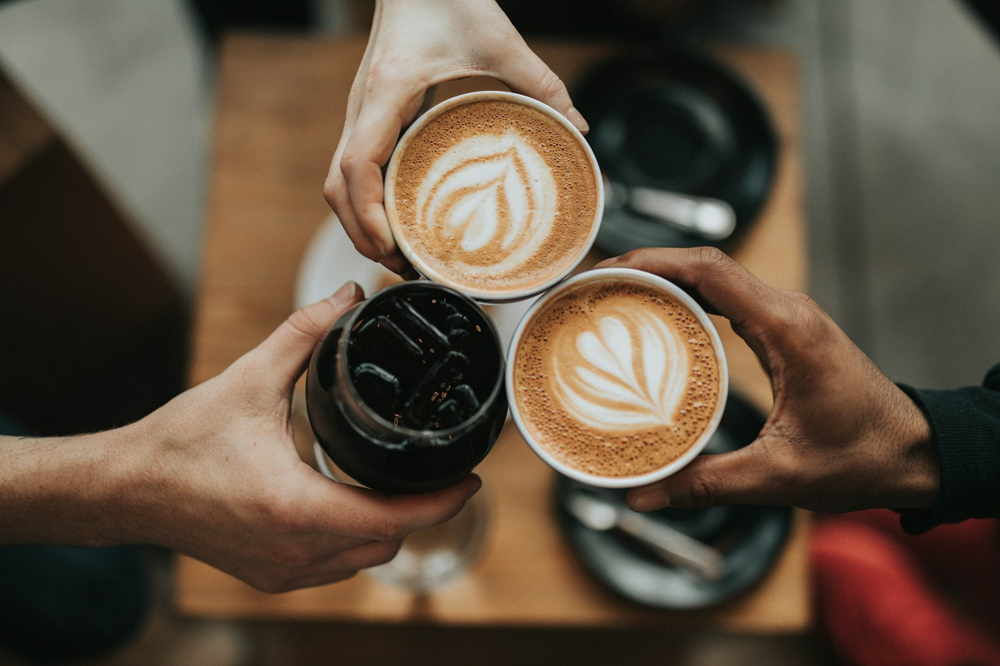

House latte
RM 12Espresso, silky milk and a moment to yourself.
COFFEE & GOOD COMPANY
For your first sip, your next big idea, or absolutely no reason at all. There’s a little room for you here.
Slow mornings. All-day possibilities.

 YOUR EVERYDAY LITTLE ESCAPE
YOUR EVERYDAY LITTLE ESCAPE
01 / OUR STORY
Some days need a strong coffee. Others need a soft landing. We imagined Slowday as a place for both.
A neighbourhood café for students, curious minds and anyone in need of a breather. Pull up a chair, bring your favourite person, and let the rest of the day wait a little.
An independent café concept, created for ICT2215.
03 / THE LITTLE RITUALS
The quiet hum of the machine. The first drops of espresso. A little reminder that some things are better unhurried.
PRESS PLAY. TAKE A BREATHER.
04 / COME ON OVER
A catch-up, a study break, or a seat by the window. We’re happy you found us.
Illustrative opening hours.
A neighbourhood café concept.
No physical shop is operating.
Questions, coffee thoughts, or just a wave.
The form preview is complete. No message was sent or saved.
Back to contact